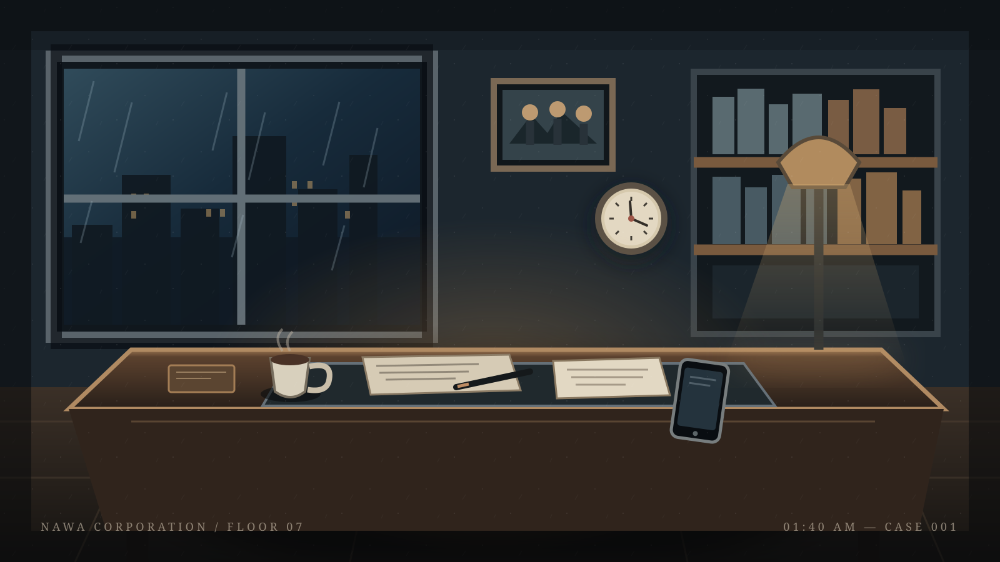

أدر هاتفك إلى الوضع الأفقي لمتابعة التحقيق بأفضل تجربة.
ملف التحقيق رقم 001
كل شخص لديه رواية. وكل رواية تخفي شيئاً.هل تستطيع جمع ما يكفي من الأدلة لتعرف الحقيقة؟
قضية واحدة. روايات كثيرة. حقيقة واحدة.
القضية الأولى · الطابق السابع
عُثر على سليم ناصر، مدير الأبحاث المالية في شركة «نواة»، ميتاً داخل مكتبه.
لا توجد حتى الآن رواية متماسكة لما حدث في تلك الليلة. سجلات الدخول لا تتطابق، وبعض التفاصيل تبدو وكأن أحدهم أراد لها أن تُفهم بطريقة معينة.
آدم مراد — محقق خاص
مكتب آدم مراد · 02:17 AM
سليم ناصر — الطابق السابع
اربط القرائن واكتب فرضياتك
مساحة أفكار آدم
كل دليل تجمعه سيُحفظ على جهازك. تذكّر: وجود دليل في المكان لا يعني أن صاحبه هو القاتل.
مسرح الجريمة · شركة نواة
الطابق السابع — بعد اكتشاف الجثة

ملاحظة آدم: لا تقفز إلى الاستنتاج. ما نراه ليس دائماً ما حدث.
مساحة التحليل · ملف 001
الأدلة حقائق. الروابط بينها فرضيات تحتاج إلى اختبار.
هذا رابط تحليلي من صنعك، وليس حقيقة مثبتة داخل القضية. يمكنك تعديله عندما تظهر أدلة جديدة.
لم تسجّل أي روابط بعد.
قاعدة آدم: لا تجعل الدليل يقول أكثر مما يستطيع إثباته.
الأرشيف
ستظهر هنا القضايا التي تفتحها خلال رحلتك.